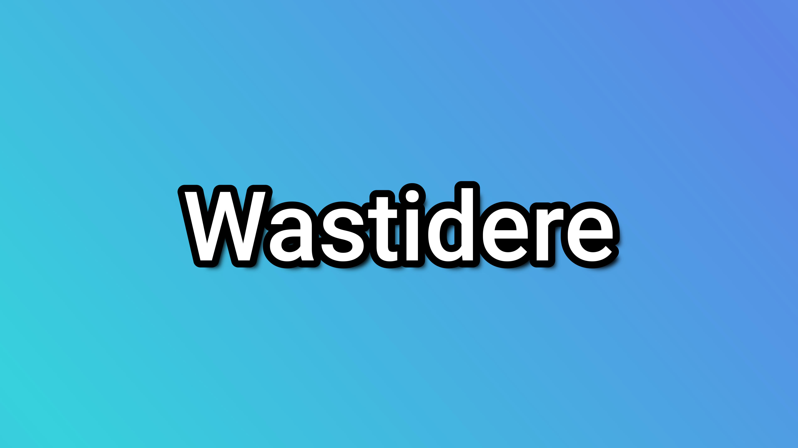

Wastidere Cutkit
Das Wastidere Cutkit ist ein modernes Template-Paket, das dir den Videoschnitt erleichtert. Es ist kompatibel mit DaVinci Resolve (getestet mit Version 20) und bietet eine Vielzahl an Templates, zum Beispiel Titel, Lower Thirds, Übergänge, LUTs und Intros. Ein absolutes Muss für YouTuber, Content Creator und Agenturen.
Wir setzen auf ein faires Einmalverkauf-Modell: Du kaufst das Cutkit einmal und nutzt es unbegrenzt.
Unsere Pakete
| Merkmal | Starter | Pro |
|---|---|---|
| Umfang | ca. 30 Templates | ca. 100 Templates |
| Inhalt | Titel, Lower Thirds, Übergänge | Titel, Lower Thirds, Übergänge, LUTs und Intros |
| Nutzung | 1 Arbeitsplatz | bis zu 5 Arbeitsplätze |
| Preis | 29 € inkl. USt. Starter kaufen | 79 € inkl. USt. Pro kaufen |
Mit dem Kauf startet sofort der Download. Dabei erlischt dein Rücktrittsrecht. Es gilt die Lizenz.
Vorschau

Ein Beispiel Titel Effekt mit anpassbarem Hintergrund.
Grafik: Wastidere, eigenes Werk. Schrift: Roboto, siehe Medien & Quellen.
Eine Beispiel Titel Animation mit Zahlen. Geeignet zum Anzeigen des Fortschritts von Distanz, Zeit, etc.
Video (ohne Ton): Wastidere, eigenes Werk. Schrift: Roboto, siehe Medien & Quellen.
Textfassung des Videos
Das Video hat keinen Ton. Unten links im Bildschirm erscheint eine Uhrzeit im Zahlenformat in einer Box. Gleichzeitig schiebt sich eine Gerade aus dieser Box nach oben. Sie erweitert sich nach links und rechts, sodass eine große Box entsteht.
In der Box erscheinen nacheinander der Text "Wastidere", ein Zähler, der bis "19/70" hochzählt, und ein kleinerer Zähler, der bis "779/1200" hochzählt. Nach ein paar Sekunden verschwindet die ganze Animation nach unten.